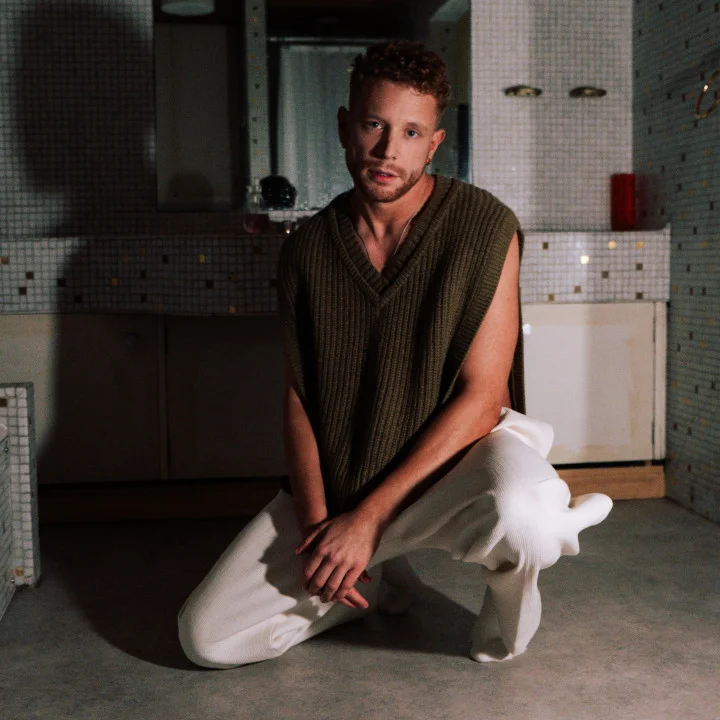

Artist & songwriter
Aidan Martin
HUGEL · Teddy Swims · ILLENIUM
Powerful vocals and songwriting that connects. Aidan’s credits include “All That Really Matters” with ILLENIUM and Teddy Swims, and “Shine” with HUGEL, David Guetta and French Montana.
More about Aidan